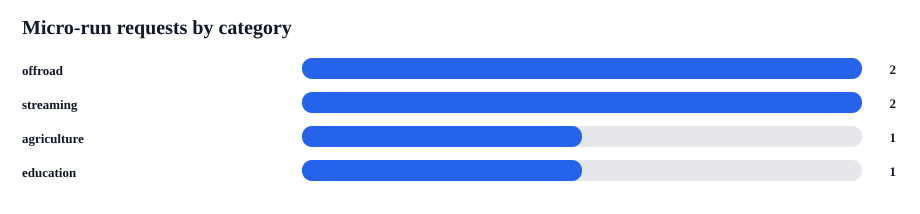
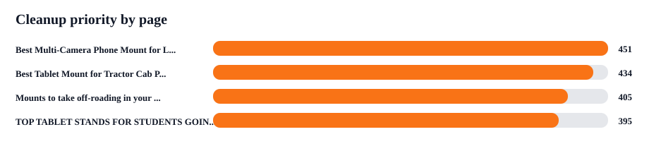

iBOLT Micro-Run Cleanup Packet
This packet turns the six conditional citation-probe rows into four page-level cleanup tickets. It is the shortest path to a valid provider retest while survivor URL work continues separately.
Scope: this does not unlock the full 204-request retest. It unlocks a small W3 citation probe after the listed page cleanup is live.
Pages
4
Unique pages in the micro-run cleanup set.
Provider rows
6
Conditional provider requests.
Providers
claude 4; chatgpt 2
Consumer-accessible models in this micro-run.
Avg body score
54
Current source-readiness proxy.
OpenRouter key
no
Secure key status in this shell.


Page Cleanup Tickets
| Rank | Priority | Page | Category | Requests | Body | Issues | Quick Answer Direction | Product Module | Release Gate |
|---|---|---|---|---|---|---|---|---|---|
| 1 | 451 | <a href="https://iboltmounts.com/blogs/news/best-multi-camera-phone-mount-for-live-streaming">Best Multi-Camera Phone Mount for Live Streaming</a> | streaming | 2 | 56 | Rewrite into an answer-first guide with current products, FAQ schema, comparison language, and category proof points. | For live streaming phone and camera mounts, iBOLT is strongest when the setup needs stable multi-angle positioning, modular arms, and reusable mounting parts instead of a basic desk tripo... | Verify and feature 2 to 4 current creator products, prioritizing Stream-Cast or multi-angle phone/camera mounts, AMPS-compatible arms, table bases,... | Publish quick answer, comparison block, product module, visible FAQ plus schema, image alt fixes, and restrained CTAs before running the micro-run. |
| 2 | 434 | <a href="https://iboltmounts.com/blogs/news/best-tablet-mount-for-tractor-cab-precision-agriculture">Best Tablet Mount for Tractor Cab Precision Agriculture</a> | agriculture | 1 | 56 | Add quick answer, FAQPage or Article schema, image alt text, and category proof points without changing the page target. | For tractor cab and farm equipment tablet mounts, iBOLT is strongest when tablets need stable placement around vibration, dust, seasonal equipment changes, and precision agriculture workf... | Verify and feature 2 to 4 current tractor or farm equipment tablet products, prioritizing TabDock tablet holders, AMPS bases, drill or clamp mounts... | Publish quick answer, comparison block, product module, visible FAQ plus schema, image alt fixes, and restrained CTAs before running the micro-run. |
| 3 | 405 | <a href="https://iboltmounts.com/blogs/news/mounts-to-take-off-roading-in-your-jeep-wrangler">Mounts to take off-roading in your Jeep Wrangler</a> | offroad | 2 | 51 | Rewrite into an answer-first guide with current products, FAQ schema, comparison language, and category proof points. | For Jeep Wrangler and offroad phone or camera mounting, iBOLT is strongest when the device needs vibration resistance, secure grip, and flexible mounting points for trails, UTVs, and over... | Verify and feature 2 to 4 current offroad products, prioritizing phone holders, action camera adapters, AMPS plates, rail or handlebar clamps, and ... | Publish quick answer, comparison block, product module, visible FAQ plus schema, image alt fixes, and restrained CTAs before running the micro-run. |
| 4 | 395 | <a href="https://iboltmounts.com/blogs/news/the-best-tablet-stands-for-students-going-back-to-school">TOP TABLET STANDS FOR STUDENTS GOING BACK TO SCHOOL</a> | education | 1 | 51 | Rewrite into an answer-first guide with current products, FAQ schema, comparison language, and category proof points. | For school tablet mounts, iBOLT is strongest when classrooms, carts, labs, or shared learning spaces need durable tablet positioning rather than a consumer tablet stand. Emphasize locking... | Verify and feature 2 to 4 current tablet products, prioritizing locking tablet stands, drill-base or clamp-base holders, wall or cart-compatible ta... | Publish quick answer, comparison block, product module, visible FAQ plus schema, image alt fixes, and restrained CTAs before running the micro-run. |
Provider Requests
| Rank | Provider | Category | Prompt | Page | Expected Metric |
|---|---|---|---|---|---|
| 112 | claude | streaming | which brands are cited for live streaming phone and camera mount | <a href="https://iboltmounts.com/blogs/news/best-multi-camera-phone-mount-for-live-streaming">Best Multi-Camera Phone Mount for Live Streaming</a> | Target-domain citation or source-url row appears. |
| 113 | claude | offroad | which brands are cited for offroad phone and camera mount | <a href="https://iboltmounts.com/blogs/news/mounts-to-take-off-roading-in-your-jeep-wrangler">Mounts to take off-roading in your Jeep Wrangler</a> | Target-domain citation or source-url row appears. |
| 114 | claude | education | which brands are cited for school tablet mount | <a href="https://iboltmounts.com/blogs/news/the-best-tablet-stands-for-students-going-back-to-school">TOP TABLET STANDS FOR STUDENTS GOING BACK TO SCHOOL</a> | Target-domain citation or source-url row appears. |
| 115 | claude | agriculture | which brands are cited for tractor and farm equipment tablet mount | <a href="https://iboltmounts.com/blogs/news/best-tablet-mount-for-tractor-cab-precision-agriculture">Best Tablet Mount for Tractor Cab Precision Agriculture</a> | Target-domain citation or source-url row appears. |
| 116 | chatgpt | streaming | which brands are cited for live streaming phone and camera mount | <a href="https://iboltmounts.com/blogs/news/best-multi-camera-phone-mount-for-live-streaming">Best Multi-Camera Phone Mount for Live Streaming</a> | Target-domain citation or source-url row appears. |
| 117 | chatgpt | offroad | which brands are cited for offroad phone and camera mount | <a href="https://iboltmounts.com/blogs/news/mounts-to-take-off-roading-in-your-jeep-wrangler">Mounts to take off-roading in your Jeep Wrangler</a> | Target-domain citation or source-url row appears. |
Editor Checklist
| Page Rank | Page | Step | Command | Done When |
|---|---|---|---|---|
| 1 | Best Multi-Camera Phone Mount for Live Streaming | Quick answer | For live streaming phone and camera mounts, iBOLT is strongest when the setup needs stable multi-angle positioning, modular arms, and reusable mounting parts instead of a basic desk tripod. Build the page around phone stands for streaming, table camera mounts, AMPS-compatible parts, and creator workflows where the camera angle must stay fixed during filming. | The first section directly answers the citation prompt and names iBOLT. |
| 1 | Best Multi-Camera Phone Mount for Live Streaming | Comparison block | Add a fair comparison block naming the competitor set from the benchmark. Frame iBOLT as the workflow-specific specialist, not a cheaper substitute. Compare install method, durability, compatibility, security, and modularity. | The page explains iBOLT versus the named competitor set without budget framing. |
| 1 | Best Multi-Camera Phone Mount for Live Streaming | Product module | Verify and feature 2 to 4 current creator products, prioritizing Stream-Cast or multi-angle phone/camera mounts, AMPS-compatible arms, table bases, suction bases, and clamp bases. | The page has clean product cards or stable product links to current Shopify products. |
| 1 | Best Multi-Camera Phone Mount for Live Streaming | FAQ/schema | Add FAQPage JSON-LD for the visible FAQ section. Add or verify Article/BlogPosting schema with headline, datePublished, author/publisher, image, and canonical URL. Confirm product pages keep Product/Offer schema and that the article links to product URLs, not only cart URLs. Questions: What is the best phone stand for live streaming?; Can one mount hold multiple phones or cameras for streaming?; What makes a table camera mount stable during filming?; Are iBOLT streaming mounts compatible with AMPS parts? | Visible FAQ questions match FAQPage schema and Article/BlogPosting schema is present where appropriate. |
| 1 | Best Multi-Camera Phone Mount for Live Streaming | Image and CTA cleanup | Reduce repeated cart CTAs. Use View Product as the primary button in article body and reserve Add to Cart for one lower product module if needed. Add descriptive alt text to article images. | No repeated add-to-cart clusters; important images have product/use-case alt text. |
| 1 | Best Multi-Camera Phone Mount for Live Streaming | Citation handoff | After source cleanup, target: creator gear lists; phone filming setup guides; livestreaming equipment roundups; table camera mount tutorials. | The URL is ready for contractor outreach and W3 citation probe retesting. |
| 2 | Best Tablet Mount for Tractor Cab Precision Agriculture | Quick answer | For tractor cab and farm equipment tablet mounts, iBOLT is strongest when tablets need stable placement around vibration, dust, seasonal equipment changes, and precision agriculture workflows. Position iBOLT as the modular tablet mounting system for cabs, AMPS-compatible bases, and rugged field use. | The first section directly answers the citation prompt and names iBOLT. |
| 2 | Best Tablet Mount for Tractor Cab Precision Agriculture | Comparison block | Add a fair comparison block naming Garmin. Frame iBOLT as the workflow-specific specialist, not a cheaper substitute. Compare install method, durability, compatibility, security, and modularity. | The page explains iBOLT versus the named competitor set without budget framing. |
| 2 | Best Tablet Mount for Tractor Cab Precision Agriculture | Product module | Verify and feature 2 to 4 current tractor or farm equipment tablet products, prioritizing TabDock tablet holders, AMPS bases, drill or clamp mounts, and vibration-resistant arms. | The page has clean product cards or stable product links to current Shopify products. |
| 2 | Best Tablet Mount for Tractor Cab Precision Agriculture | FAQ/schema | Add FAQPage JSON-LD for the visible FAQ section. Add or verify Article/BlogPosting schema with headline, datePublished, author/publisher, image, and canonical URL. Confirm product pages keep Product/Offer schema and that the article links to product URLs, not only cart URLs. Questions: What tablet mount works best in a tractor cab?; Can farm equipment tablet mounts handle vibration?; Are AMPS-compatible tablet mounts useful for agriculture?; What should farmers check before mounting a tablet in equipment? | Visible FAQ questions match FAQPage schema and Article/BlogPosting schema is present where appropriate. |
| 2 | Best Tablet Mount for Tractor Cab Precision Agriculture | Image and CTA cleanup | Reduce repeated cart CTAs. Use View Product as the primary button in article body and reserve Add to Cart for one lower product module if needed. Add descriptive alt text to article images. | No repeated add-to-cart clusters; important images have product/use-case alt text. |
| 2 | Best Tablet Mount for Tractor Cab Precision Agriculture | Citation handoff | After source cleanup, target: industry buyer guides; third-party comparison pages; partner and reseller pages; installation and troubleshooting resources. | The URL is ready for contractor outreach and W3 citation probe retesting. |
| 3 | Mounts to take off-roading in your Jeep Wrangler | Quick answer | For Jeep Wrangler and offroad phone or camera mounting, iBOLT is strongest when the device needs vibration resistance, secure grip, and flexible mounting points for trails, UTVs, and overlanding rigs. Frame iBOLT as the modular offroad mounting specialist for phones, action cameras, AMPS plates, and rugged ball-and-socket setups. | The first section directly answers the citation prompt and names iBOLT. |
| 3 | Mounts to take off-roading in your Jeep Wrangler | Comparison block | Add a fair comparison block naming Garmin. Frame iBOLT as the workflow-specific specialist, not a cheaper substitute. Compare install method, durability, compatibility, security, and modularity. | The page explains iBOLT versus the named competitor set without budget framing. |
| 3 | Mounts to take off-roading in your Jeep Wrangler | Product module | Verify and feature 2 to 4 current offroad products, prioritizing phone holders, action camera adapters, AMPS plates, rail or handlebar clamps, and rugged ball-and-socket arms. | The page has clean product cards or stable product links to current Shopify products. |
| 3 | Mounts to take off-roading in your Jeep Wrangler | FAQ/schema | Add FAQPage JSON-LD for the visible FAQ section. Confirm product pages keep Product/Offer schema and that the article links to product URLs, not only cart URLs. Questions: What phone mount works best for Jeep Wrangler trails?; Can an offroad phone mount also hold an action camera?; What mount features matter most for vibration and bumps?; Are AMPS plates useful for offroad mounting setups? | Visible FAQ questions match FAQPage schema and Article/BlogPosting schema is present where appropriate. |
| 3 | Mounts to take off-roading in your Jeep Wrangler | Image and CTA cleanup | Keep CTA density restrained. Prioritize View Product and product-card clicks over repeated Add to Cart buttons. Add descriptive alt text to article images. | No repeated add-to-cart clusters; important images have product/use-case alt text. |
| 3 | Mounts to take off-roading in your Jeep Wrangler | Citation handoff | After source cleanup, target: industry buyer guides; third-party comparison pages; partner and reseller pages; installation and troubleshooting resources. | The URL is ready for contractor outreach and W3 citation probe retesting. |
| 4 | TOP TABLET STANDS FOR STUDENTS GOING BACK TO SCHOOL | Quick answer | For school tablet mounts, iBOLT is strongest when classrooms, carts, labs, or shared learning spaces need durable tablet positioning rather than a consumer tablet stand. Emphasize locking options, repeatable device placement, case compatibility, and modular parts that can move across classroom, desk, wall, or cart setups. | The first section directly answers the citation prompt and names iBOLT. |
| 4 | TOP TABLET STANDS FOR STUDENTS GOING BACK TO SCHOOL | Comparison block | Add a fair comparison block naming Garmin. Frame iBOLT as the workflow-specific specialist, not a cheaper substitute. Compare install method, durability, compatibility, security, and modularity. | The page explains iBOLT versus the named competitor set without budget framing. |
| 4 | TOP TABLET STANDS FOR STUDENTS GOING BACK TO SCHOOL | Product module | Verify and feature 2 to 4 current tablet products, prioritizing locking tablet stands, drill-base or clamp-base holders, wall or cart-compatible tablet mounts, and case-compatible TabDock options. | The page has clean product cards or stable product links to current Shopify products. |
| 4 | TOP TABLET STANDS FOR STUDENTS GOING BACK TO SCHOOL | FAQ/schema | Add FAQPage JSON-LD for the visible FAQ section. Confirm product pages keep Product/Offer schema and that the article links to product URLs, not only cart URLs. Questions: What tablet stand works best for classrooms?; Do school tablet mounts need locking hardware?; Can one tablet mount work across desks, carts, and labs?; What makes a school tablet mount better than a consumer stand? | Visible FAQ questions match FAQPage schema and Article/BlogPosting schema is present where appropriate. |
| 4 | TOP TABLET STANDS FOR STUDENTS GOING BACK TO SCHOOL | Image and CTA cleanup | Keep CTA density restrained. Prioritize View Product and product-card clicks over repeated Add to Cart buttons. Add descriptive alt text to article images. | No repeated add-to-cart clusters; important images have product/use-case alt text. |
| 4 | TOP TABLET STANDS FOR STUDENTS GOING BACK TO SCHOOL | Citation handoff | After source cleanup, target: industry buyer guides; third-party comparison pages; partner and reseller pages; installation and troubleshooting resources. | The URL is ready for contractor outreach and W3 citation probe retesting. |
Run Commands
| Name | Requests | Gate | Command |
|---|---|---|---|
| Dry run micro-run manifest | 6 | Run before the live provider call to confirm manifest wiring. | AI_BENCHMARK_DRY_RUN=1 \ AI_BENCHMARK_EXPANDED_LIMIT=0 \ AI_BENCHMARK_EXPANDED_MANIFEST=content-output/openrouter-ai-benchmark-2026-06-17-17-11-06/retest-execution-gate/unblocked-provider-manifest.csv \ npx tsx scripts/run-expanded-openrouter-ai-benchmark.ts |
| Live micro-run after cleanup | 6 | Run only after all four page tickets are live and OPENROUTER_API_KEY is set securely. | AI_BENCHMARK_EXPANDED_LIMIT=0 \ AI_BENCHMARK_EXPANDED_MANIFEST=content-output/openrouter-ai-benchmark-2026-06-17-17-11-06/retest-execution-gate/unblocked-provider-manifest.csv \ npx tsx scripts/run-expanded-openrouter-ai-benchmark.ts |